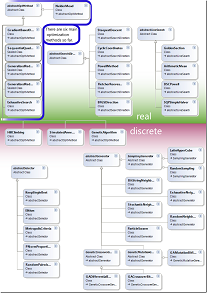

This project is maintained by DesignEngrLab
The following “class diagram” shows the main optimization methods that have currently been implemented – as well as some insight into organization of classes and objects. The best way to understand how to use OOOT, is through examples. There are two basic types of methods implemented so far: methods for continuous variables and methods for discrete variables. Approaches for mixed methods such as Branch-and-Bound are planned but not currently included.
Many of the optimization methods for real valued decision variables will require that a line-search method be specified (Arithmetic Mean, Golden Section, DSC-Powell) and a search direction method (Cyclic Coordinate Search, Steepest Descent, Powell’s Method, Fletcher-Reeves, or Broyden-Fletcher-Goldfarb-Shanno).
With this modular design it is possible to reconfigure these to create 80 unique algorithms. In addition to these there are also ten different convergence criteria that can be added individually or in any combination to these 80 algorithms. Read more about convergence methods here.
But, one of the biggest advantages of the toolbox is the way that objective functions, equalities and inequalities can be easily added to the optimization process. Most (if not all open source approaches) optimization codes requires the problem specific details to be compiled along with the algorithm. Here, the problem formulation can be in another library or exe and can be customized at run-time instead of compile time. It is even possible to have the optimization algorithm change in response to the nature of the design variables and the number of constraints. Read more about problem formulation here.
There are some powerful, commercial, optimization toolboxes, and there is MatLab’s wonderful toolbox, but there is no excellent open-source for C, C#, C++, and Java. This is a grass-roots attempt to create this. My individual efforts to create this are winding down, but hopefully others will join in to make this a Wikipedia-like high-quality research tool. Read more about my plans, the unresolved issues, and the master to-do list, here.
{kind=link}